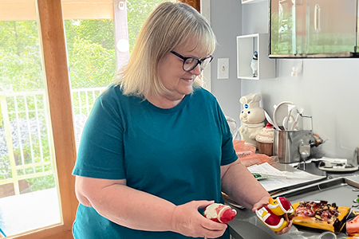

Linda Travels

Linda loves to take road trips with her family.
- Around Iowa
- Around Nebraska
- and Kansas City
Linda Decorates
Linda loves to decorate her house for each holiday.
- Christmas
- Easter
- Halloween
About Linda
Linda, born and raised in Council Bluffs, IA, was the only girl among three brothers, growing up in a house rich with family history. She played the violin, was a pep club member, and participated in Girl Scouts, later becoming a troop leader. After retiring, Linda embraced adventure with her husband, Ron, traveling to Las Vegas and exploring Iowa, Nebraska, and Kansas City with their son Marshall and his best friend Amanda. Linda's passion for Christmas is evident in her festive home, filled with lights, decorations, and holiday treats. She cherishes bringing her family together, creating cherished traditions and memories.
About Linda
Here's a little information about Linda
- Her Family
- Linda was born and raised in Council Bluffs, IA, the only girl among three brothers. She grew up in the house where her mother was born, a setting rich with family history. Throughout school, Linda played the violin, was a pep club member, and participated in Girl Scouts, later becoming a troop leader after having her first child. Her childhood was lively and mischievous, often getting into trouble thanks to her brothers' antics. Linda and her younger brother, Brad, were much younger than their two older brothers, creating a dynamic akin to living in two separate families. Her days were filled with outdoor adventures, playing until the streetlights came on. She cherished trips to the Strand Theater, enjoying movies like "The Yellow Submarine," "Love Story," and "Paint Your Wagon."
- Her Adventures
- After retiring, Linda embraced adventure with her husband, Ron. They embarked on a memorable two-week road trip to Las Vegas, reveling in the sights and experiences of the vibrant city. Back home, Linda and Ron continued their explorations with multiple road trips around Iowa, Nebraska, and Kansas City. These trips often included their son Marshall and his best friend Amanda, who is like a daughter to Linda. The foursome created lasting memories, bonding over shared experiences and the joys of travel. Whether discovering hidden gems in their home state or exploring neighboring areas, Linda's post-retirement adventures have been filled with love, laughter, and the thrill of new experiences.
- Her Passion
- Linda's passion for Christmas and family shines brightly each year. She transforms her home into a festive wonderland, adorning it with lights, decorations, and many Christmas trees. Linda delights in preparing elaborate holiday meals and baking treats, filling her home with warmth and delicious aromas. Her greatest joy comes from bringing her family together, creating cherished traditions and memories. She ensures that everyone feels loved and included, making Christmas a special time for her children, grandchildren, and extended family. Linda's dedication to celebrating the season reflects her deep love for family and the magic of Christmas.
There is much more to Linda than meets the eye. She has interests in just about everything!